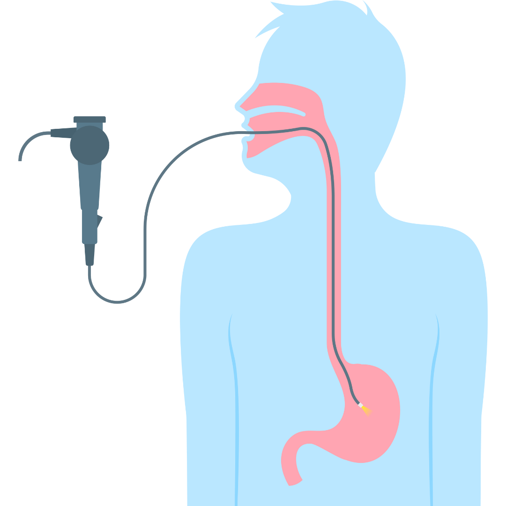
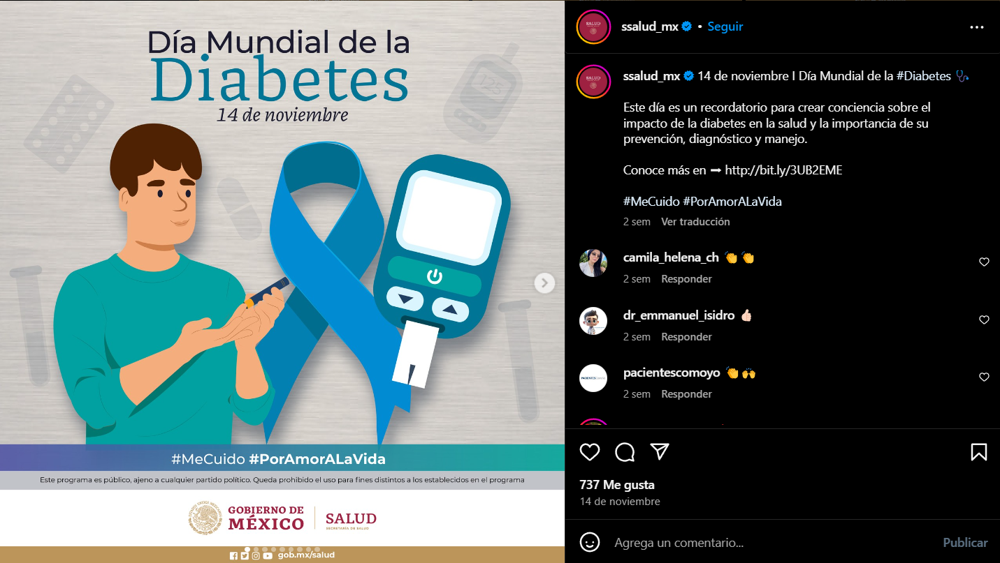
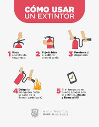
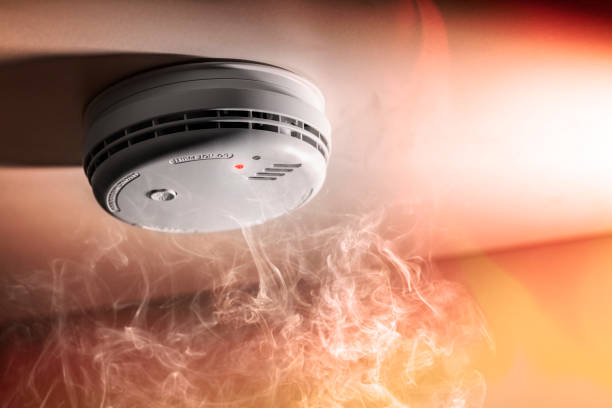

La Tecnología en la Salud
Hoy en día la tecnología esta presente casi en cualquier aspecto de nuestra vida, desde los celulares y computadoras hasta aparatos
ya no tan usados como podría ser la radio.
En el área medica para el combate de enfermedades, la tecnología ha presentado un hito debido a que sin ella, las operaciones más
complicadas no serían posibles o representarían un grado de dificultad y mortalidad muy alto. Un ejemplo actual de esto son las
cirugías que se han empezado a hacer con maquinas para realizar insiciones tan pequeñas que son casi imperceptibles.
Tecnología para la obesidad
Redes sociales
La tecnología aparte de ser usada para combatir a muchas enfermedades, en cuanto a la obesidad, también ha evolucionado.
Uno de los factores tecnologicos de los que casi no se habla son las redes sociales. Este fenomeno se le puede considerar como
"un aram de doble filo" debido a que, si bien puede tener un gran impacto en cierto grupo de personas y ocuparse de una manera
responsable, como por ejemplo la campaña de salud que anteriormente presentamos, también puede ser un factor contraproducente por
el constante estimulo de anuncios y comida chatarra o poco saludable que puede aparecer en el feed de las personas.
-
Técnicas Endoscopicas
Las endoscopias son uno de los mayores avances en cuestión de medicina que ha podido haber en siglos. Una endoscopia es cuando
mediante un endoscopio se explora cierta región del cuerpo en la cual se sospecha que puede haber alguna enfermedad o
malformidad desarrollándose y de esta manera tener claro cuál es el problema y como se va a tener que tratar. En cuanto a
problemas de salud relacionados con la obesidad, las tácnicas endoscópicas ayudan a determinar cuál puede ser la mejor manera
para combatir algún problema de sobrepeso u obesidad

-
Relojes inteligentes
Una de las tecnologías más innovadoras que quizás no esté perfeccionada, pero ya tiene un uso constante es el de los relojes o
pulseras inteligentes que permiten contabilizar la cantidad de ejercicio que un individuo realiza. Estos relojes inteligentes
aparte de solo introducir el ejercicio que realizas, también pueden detectar el movimiento del individuo y marcar cuantos pasos
o cuanto tiempo se movió este mismo.
Tecnologías para la prevención de accidentes
-
Redes sociales
Como ya se mencionó antes, las redes sociales son un arma muy poderosa pero también puedes ser perjudiciales, pero en este caso,
nos estamos enfocando en el aspecto positivo, y es que, las redes sociales son un medio de difusión masivo, por lo que si se
desea mandar un mensaje a nivel internacional o nacional con un gran alcance, las redes sociales hacen bien el trabajo.

-
Videos - Tutoriales
Siguiendo un poco con el concepto de internet, cuando se trata de prevenir accidentes, en internet puedes encontrar un tutorial
o video para casi todo, lo cual nos puede ayudar a prevenir accidentes o lesiones por la falta de conocimiento o por la falta
de no saber como utilizar cierto producto.

-
Equipo especializado o instalaciones especializadas
Uno de los grandes avances en la tecnología son los equipos especializados para alguna situación de riesgo.
Un ejemplo podría ser el detector de humo, que este cuando se activa prende aspersores o llama a algún servicio de emergencia
dependiendo de como esté configurado. Este avancé es de los más importantes y que ha representado un gran cambio para la
seguridad de cada persona y sus pertenencias.

Bibliografías